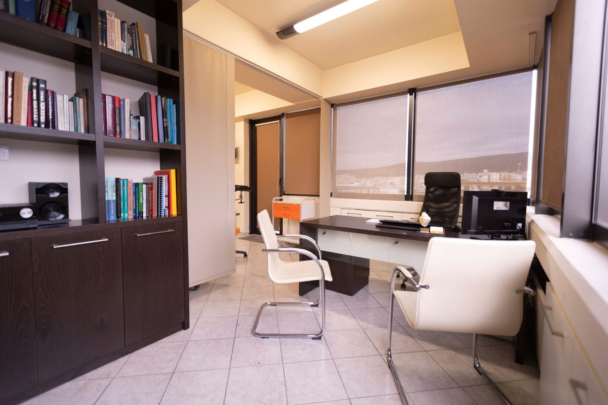

01
Μαιευτική Φροντίδα
Παρακολούθηση κύησης χαμηλού και υψηλού κινδύνου, με υπερηχογράφημα ανάπτυξης και Doppler, για την ασφάλεια της μητέρας και του εμβρύου.
Ολοκληρωμένη γυναικολογική και μαιευτική φροντίδα με επίκεντρο την ασφάλεια και τον σεβασμό στη γυναίκα, από τον Δρ. Μιλτιάδη Κουμπλή.


Αφοσίωση στην επιστήμη, απόλυτος σεβασμός στη γυναίκα και εξατομικευμένη προσέγγιση σε κάθε περιστατικό.
Ο Δρ. Μιλτιάδης Κουμπλής είναι Μαιευτήρας – Χειρουργός Γυναικολόγος, με εξειδίκευση και μετεκπαίδευση στην ελάχιστα επεμβατική ενδοσκοπική χειρουργική. Διαθέτει 18 χρόνια εμπειρίας και το ιατρείο του είναι πλήρως εξοπλισμένο για ολοκληρωμένο διαγνωστικό έλεγχο και παρακολούθηση κύησης.
Ολοκληρωμένη φροντίδα σε κάθε φάση της γυναικείας υγείας. Επιλέξτε για περισσότερα.
Ο απαραίτητος γυναικολογικός και μαιευτικός έλεγχος σε έναν χώρο — με διακριτικότητα και ασφάλεια.
Προληπτικός κυτταρολογικός και μοριακός έλεγχος τραχήλου.
Μεγεθυντικός έλεγχος τραχήλου & κόλπου με αναλυτική καθοδήγηση.
Κολπικός υπέρηχος: πλήρης έλεγχος μήτρας, ωοθηκών & σαλπίγγων.
Παρακολούθηση ανάπτυξης & Doppler.
Έλεγχος για σεξουαλικώς μεταδιδόμενα νοσήματα.
Λεπτοί, ανώδυνοι χειρισμοί με ενσυναίσθηση.
Το ιατρείο λειτουργεί με ραντεβού. Η σημερινή ημέρα επισημαίνεται αυτόματα.
Συνολική βαθμολογία 5.0 / 5.0 από αξιολογήσεις ασθενών στο Google.
«Εξαιρετικός γιατρός! Από την πρώτη στιγμή με έκανε να νιώσω άνετα και ασφαλής. Ήταν πολύ προσεκτικός και επεξηγηματικός.»
«Είναι ο καλύτερος γυναικολόγος! Είναι Άνθρωπος πάνω από όλα. Σε όλη την εγκυμοσύνη ήταν δίπλα μου να με στηρίζει.»
«Εξαιρετικός γιατρός, ο μόνος που εμπιστεύομαι, ανά πάσα στιγμή διαθέσιμος να σε ακούσει και να σου εξηγήσει τα πάντα λεπτομερώς.»
«Εμπνέει σιγουριά με τις γνώσεις που έχει. Αξίζουν τα χιλιόμετρα που κάνω κάθε φορά για να βρεθώ στο ιατρείο του!»
Είμαστε εδώ για κάθε ερώτηση σχετικά με την υγεία σας. Επικοινωνήστε τηλεφωνικά ή επισκεφθείτε μας στο ιατρείο.